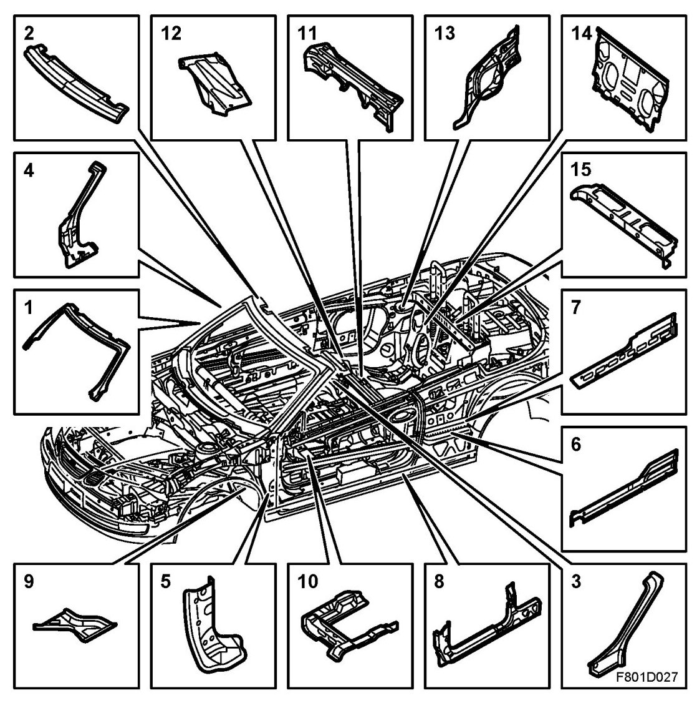

Body Reinforcements, CV
Body Reinforcements, CV
Overview

1. Windscreen frame outer panel
2. Windscreen frame, upper
3. Inner upper A-pillar
4. Centre A-pillar
5. Hinge reinforcement
6. Inner sill
7. Centre sill
8. Outer sill
9. Floor reinforcement
10. Seat bracket
11. Transverse reinforcement
12. B-pillar reinforcement
13. Torsion box side panel
14. Torsion box front panel
15. Torsion box upper panel
Description
The body is reinforced in a number of places to compensate for the lack of a rigid roof. The A-pillar is designed to act as a rollbar. When repairing the body, correct alignment is extremely important in order to avoid distortion and asymmetry in the repaired vehicle. A correctly repaired body is an absolute condition for optimum adjustment of the soft top and satisfactory operation after repair.
IMPORTANT: Body reinforcement must only be cut and joined if it is specifically covered in the method description. Unless otherwise stated, it is mandatory to discard and renew the damaged reinforcement component.